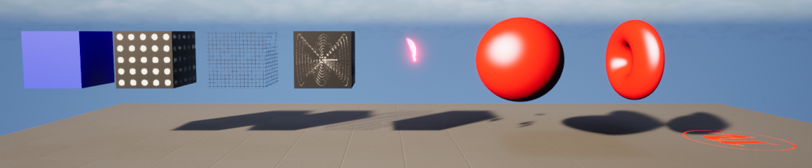
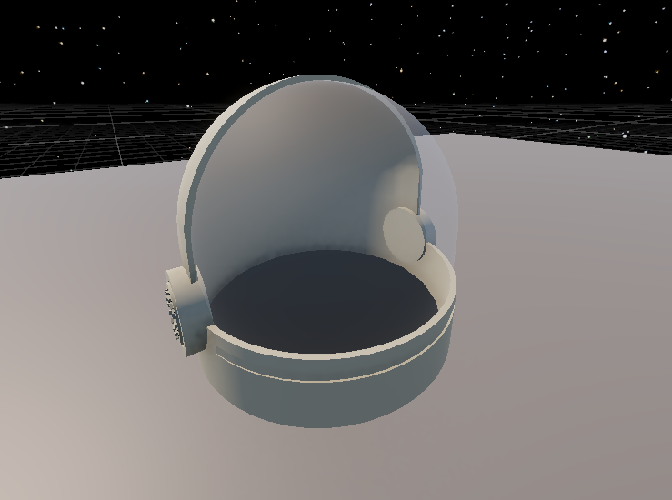
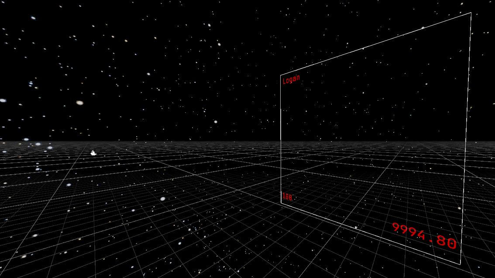
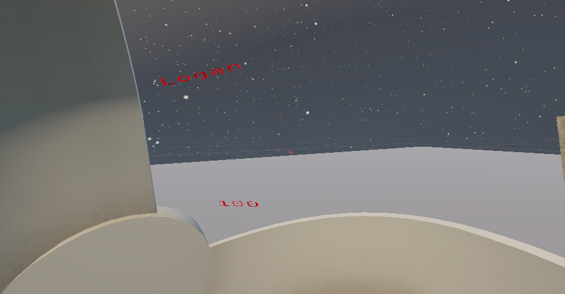

Projected Helmet U.I
Overview
This project was created using the Unity game engine. It was primarily written in HLSL, utilising unitys URP and ShaderLabs API. the project was primarily research based (atleast for me) and I hit many knowledge blocks, most notably: Matrix transformations, Projection math and other cornerstones of computer graphics like vertex and fragment mapping. Albeit, a great learning experience.
Purpose
I wanted to create a shader which could take a 2D render texture and translate it from the camera onto a concave mesh (as a projector would). After watching and completing a tutorial by RenderBucket for shaders and raymarching. I became fascinated with shaders and had found an outlet for a retro projector UI which I had been wanting to do for a long time. I wanted a retro-futuristic feel with an immersive touch for virtual reality based games.
Process
I built this partly during one of my game computation university courses, however after biting off more than I could chew, it quickly became a passion project. I spent most of my time in old Unity forums and Visual Studio Code, just trying to get the design in my head onto the screen. Notable roadblocks during development were getting a 2D UI into the projector, I ended up solving This by using a 2D render texture, (a common solution for reactive UI's in unity)
Product
The most difficult problem in this project byfar was writing the shader, I've attached the git repo below if you would like a more complex explanation, but if not here is a short version; the players data is handled using Scriptable Objects this is then handed to the 2D Render Texture which is finally passed into the shader. In another area --- a script sends all the relevant matrices such as the Model, View and Projection matrices into the shader. The shader than samples the 2D render texture and uses the matrices to transform vertices from the texture into the clip space. Its then distorted by a colour and position sin wave animation while also performing a perspective divide to make sure its not orthographic. The final product is a 2D texture projected onto a concave target mesh. Repo below.
